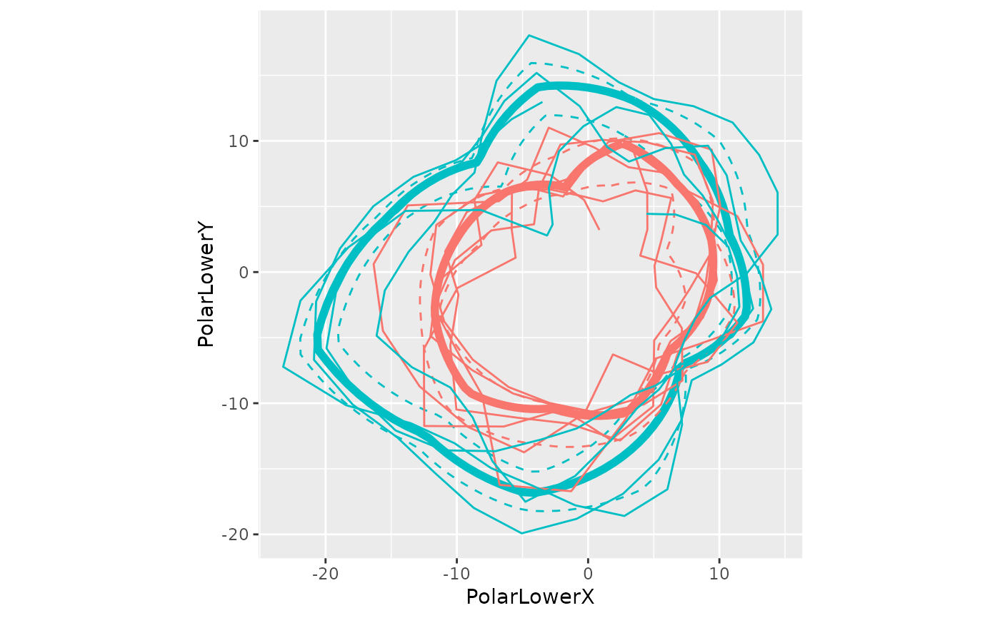

Manipulate Cartesian data to use in the WATS polar plot
Source:R/PolarizeCartesian.R
PolarizeCartesian.RdThree operations are performed. First, within each stage, the first row is repeated at the end, to close the loop. Second, multiple points are interpolated (still in a Cartesian coordinates) so that the polar graph doesn't have sharp edges. These sharp edges would be artifacts of the conversion, and not reflect the observed data. Third, the Cartesian points are converted to polar coordinates.
Usage
PolarizeCartesian(
dsLinear,
dsStageCycle,
yName,
stageIDName,
cycleTallyName = "CycleTally",
proportionThroughCycleName = "ProportionThroughCycle",
periodicLowerName = "PositionLower",
periodicCenterName = "PositionCenter",
periodicUpperName = "PositionUpper",
plottedPointCountPerCycle = 120,
graphFloor = min(base::pretty(x = dsLinear[[yName]]))
)Arguments
- dsLinear
The data.frame to containing the simple linear data. There should be one record per observation.
- dsStageCycle
The data.frame to containing the reoccurring/periodic bands. There should be one record per observation per stage. If there are three stages, this data.frame should have three times as many rows as
dsLinear.- yName
The variable name containing the dependent/criterion variable.
- stageIDName
The variable name indicating which stage the record belongs to. For example, before the first interruption, the
StageIDis1, and is2afterwards.- cycleTallyName
The variable name indicating how many complete cycles have occurred at that observation.
- proportionThroughCycleName
The variable name showing how far through a cycle the observation (or summarized observations) occurred.
- periodicLowerName
The variable name showing the lower bound of a stage's periodic estimate.
- periodicCenterName
The variable name showing the center estimate of a stage's periodic estimate.
- periodicUpperName
The variable name showing the upper bound of a stage's periodic estimate.
- plottedPointCountPerCycle
The number of points that are plotted per cycle. If the polar graph has 'sharp corners', then increase this value.
- graphFloor
The value of the criterion/dependent variable at the center of the polar plot.
Value
Returns a data.frame.
Examples
library(Wats)
dsLinear <- CountyMonthBirthRate2005Version
dsLinear <- dsLinear[dsLinear$CountyName=="oklahoma", ]
dsLinear <- AugmentYearDataWithMonthResolution(dsLinear=dsLinear, dateName="Date")
hSpread <- function( scores ) { return( quantile(x=scores, probs=c(.25, .75)) ) }
portfolio <- AnnotateData(
dsLinear = dsLinear,
dvName = "BirthRate",
centerFunction = median,
spreadFunction = hSpread
)
rm(dsLinear)
polarized <- PolarizeCartesian(
dsLinear = portfolio$dsLinear,
dsStageCycle = portfolio$dsStageCycle,
yName = "BirthRate",
stageIDName = "StageID"
)
library(ggplot2)
ggplot(polarized$dsStageCyclePolar, aes(color=factor(StageID))) +
geom_path(aes(x=PolarLowerX, y=PolarLowerY), linetype=2) +
geom_path(aes(x=PolarCenterX, y=PolarCenterY), size=2) +
geom_path(aes(x=PolarUpperX, y=PolarUpperY), linetype=2) +
geom_path(aes(x=ObservedX, y=ObservedY), data=polarized$dsObservedPolar) +
coord_fixed(ratio=1) +
guides(color=FALSE)
#> Warning: Using `size` aesthetic for lines was deprecated in ggplot2 3.4.0.
#> ℹ Please use `linewidth` instead.
#> Warning: The `<scale>` argument of `guides()` cannot be `FALSE`. Use "none" instead as
#> of ggplot2 3.3.4.
